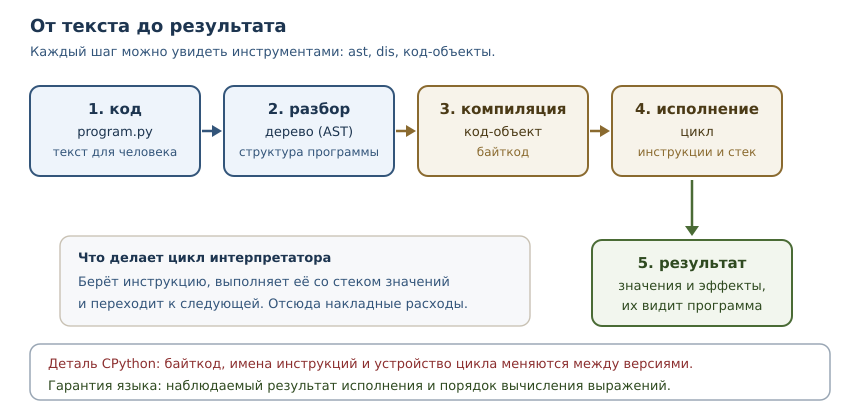
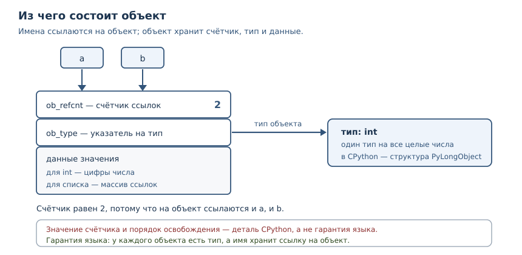

Внутреннее устройство Python
Байткод, интерпретатор, сборка мусора, память и объектная модель CPython.
В этой главе
Обычно Python воспринимают как чёрный ящик: пишем текст, запускаем, получаем
результат. Пока всё работает, этого достаточно. Но стоит столкнуться с
утечкой памяти, странным поведением is или медленным участком кода, как
полезно заглянуть внутрь. Эта глава открывает коробку: вы увидите, как
программа превращается в байткод, как исполняется, как устроены объекты и
как освобождается память.
Сразу важная оговорка, которая будет повторяться: Python — это язык, а CPython — его основная реализация. Часть того, что мы разберём, описывает сам язык и верно всегда. Другая часть — детали CPython, которые могут отличаться в другой реализации и даже в другой версии. Смешивать их — источник ложных выводов, поэтому мы будем размечать каждое утверждение.
42.1 Что вы сможете после этой главы
- отличать гарантии языка от деталей реализации CPython;
- читать байткод через
disи понимать, что он не обещает стабильности; - объяснять, как устроен объект и почему переменная — это ссылка;
- понимать подсчёт ссылок, циклическую сборку мусора и их ограничения;
- объяснять, почему память не возвращается системе сразу, и что показывает
sys.getsizeof; - не полагаться на кэш малых целых и другие оптимизации там, где нужна переносимость.
42.2 Гарантия языка и деталь реализации
Гарантия языка — поведение, описанное в спецификации и обязательное для любой реализации Python. Деталь реализации — особенность конкретной реализации, которую можно наблюдать, но нельзя требовать: она меняется между версиями и не обязана повторяться в PyPy, GraalPy или другой реализации.
| Вопрос | Статус |
|---|---|
| порядок вычисления операндов слева направо | гарантия языка |
| что переменная — ссылка на объект | гарантия языка |
| что память освобождается сразу после удаления последней ссылки | деталь CPython (подсчёт ссылок) |
| что байткод такой, как в этой главе | деталь CPython, меняется между версиями |
что int от −5 до 256 переиспользуются |
деталь CPython (кэш малых целых) |
что sys.getsizeof показывает размер памяти |
деталь CPython (и только часть правды) |
| что циклы без внешних ссылок будут собраны сборщиком | деталь CPython, время не гарантируется |
что __del__ вызовется в известный момент |
не гарантируется |
Проверим гарантию порядка вычислений — она пригодится, чтобы отличать её от оптимизаций.
def first():
print("первый")
return 1
def second():
print("второй")
return 2
print(first() + second())
первый
второй
3
Операнды вычисляются слева направо, и это свойство языка, а не случайность CPython: на него можно опираться в любом коде. Дальше пойдут утверждения слабее: их можно наблюдать в CPython 3.14.4, но переносить на другие условия нельзя.
42.3 От исходного кода к байткоду
Байткод — внутреннее представление программы в виде последовательности простых инструкций для виртуальной машины CPython. Исходный текст не исполняется напрямую: сначала его разбирают, затем компилируют в байткод, и только потом исполняют.

Блоки в dis показывают ровно эти шаги. Начнём с объектов кода: у каждого
код-объекта есть имена, локальные переменные и константы.
import dis
def greet(name):
message = "привет, " + name
return message
code = greet.__code__
print("имена:", code.co_names)
print("локальные:", code.co_varnames)
print("константы:", code.co_consts)
print("инструкции:", [instruction.opname for instruction in dis.get_instructions(greet)])
имена: ()
локальные: ('name', 'message')
константы: ('привет, ',)
инструкции: ['RESUME', 'LOAD_CONST', 'LOAD_FAST_BORROW', 'BINARY_OP', 'STORE_FAST', 'LOAD_FAST_BORROW', 'RETURN_VALUE']
Читать последовательность инструкций можно как рецепт для стека. LOAD_CONST
кладёт значение на стек, LOAD_FAST_BORROW — локальную переменную,
BINARY_OP снимает два значения и кладёт результат, STORE_FAST сохраняет в
локальную переменную, RETURN_VALUE возвращает верхушку стека. Подробности
имён меняются от версии к версии: в Python 3.12 здесь были бы LOAD_FAST и
BINARY_OP иначе, а в 3.11 — ещё другие. Это и есть деталь реализации.
Модуль dis — дизассемблер байткода из стандартной библиотеки. Он
показывает инструкции, которые исполнит интерпретатор, и помогает понять, что
на самом деле делает ваш код.
$ python3 -c "import dis; dis.dis('result = 1 + 2')"
0 RESUME 0
1 LOAD_SMALL_INT 3
STORE_NAME 0 (result)
LOAD_CONST 1 (None)
RETURN_VALUE
Обратите внимание: сложение 1 + 2 исчезло ещё на этапе компиляции. Компилятор
вычислил константное выражение и оставил только загрузку результата. Такая
оптимизация допустима, потому что на результат она не влияет, — ещё один
пример того, что байткод свободен меняться, пока выполняется обещанное
поведение. Проверить это можно и программно: сравните инструкции для
x = 2 * 3 и для x = a * b.
import dis
folded = compile("x = 2 * 3", "<пример>", "exec")
dynamic = compile("x = a * b", "<пример>", "exec")
print("2 * 3:", [instruction.opname for instruction in dis.get_instructions(folded)])
print("a * b:", [instruction.opname for instruction in dis.get_instructions(dynamic)])
2 * 3: ['RESUME', 'LOAD_SMALL_INT', 'STORE_NAME', 'LOAD_CONST', 'RETURN_VALUE']
a * b: ['RESUME', 'LOAD_NAME', 'LOAD_NAME', 'BINARY_OP', 'STORE_NAME', 'LOAD_CONST', 'RETURN_VALUE']
В первом случае нет ни загрузки двух операндов, ни операции умножения: остался
один загрузчик готового числа. Во втором случае видны LOAD_NAME и
BINARY_OP: значения известны только во время исполнения.
42.4 Цикл интерпретатора
Цикл интерпретатора — главный цикл CPython, который берёт очередную
инструкцию байткода, выполняет её и переходит к следующей. Он устроен как
большой выбор по коду операции; в исходниках CPython это функция _PyEval_EvalFrameDefault
в файле ceval.c. Каждая инструкция работает со стеком значений: загружает,
складывает, вызывает, сохраняет.
Стек объясняет, почему байткод выглядит именно так. Для a + b нужно сначала
положить на стек a, затем b, затем выполнить сложение, которое снимет оба
значения и положит результат. Инструкции не знают имён переменных — они знают
индексы в таблице локальных имён, поэтому co_varnames и индексы в байткоде
связаны.
Углубление: адаптивная специализация
Начиная с Python 3.11 цикл интерпретатора адаптивный: горячие инструкции
заменяются специализированными вариантами под конкретные типы данных. Пока
функция не прогрета, dis показывает базовые инструкции. После многих вызовов
с одинаковыми типами интерпретатор подставляет вариант, который не проверяет
типы заново, а если предположение нарушается — возвращается к общей версии.
import dis
def add(a, b):
return a + b
for number in range(20_000):
add(number, number)
print("базовый вариант:", [instruction.opname for instruction in dis.get_instructions(add)])
print("адаптивный вариант:", [instruction.opname for instruction in dis.get_instructions(add, adaptive=True)])
базовый вариант: ['RESUME', 'LOAD_FAST_BORROW_LOAD_FAST_BORROW', 'BINARY_OP', 'RETURN_VALUE']
адаптивный вариант: ['RESUME_CHECK', 'LOAD_FAST_BORROW_LOAD_FAST_BORROW', 'BINARY_OP_ADD_INT', 'RETURN_VALUE']
В адаптивном варианте BINARY_OP стала BINARY_OP_ADD_INT, а RESUME —
RESUME_CHECK: интерпретатор уже знает, что складываются целые числа, и
проверяет это быстрее. Ускорение достигается не изменением языка, а
перестройкой инструкций под наблюдаемое поведение. Имена таких инструкций —
самая изменчивая часть байткода, поэтому в учебных целях их читают, но в коде
на них не опираются.
Из устройства цикла следуют практические выводы. Каждая инструкция — это
небольшая работа интерпретатора, поэтому длинные цепочки простых операций
дороже, чем одна встроенная функция, написанная на C. Именно поэтому встроенные
sum, min, sorted обычно быстрее ручных циклов: работа выполняется в C, без
накладных расходов на каждую инструкцию.
42.5 PyObject: из чего состоит объект
PyObject — базовая структура C, с которой начинается любой объект CPython.
В ней два обязательных поля: счётчик ссылок и указатель на тип. Конкретные
значения — число, строка, список — хранятся в структуре-расширении, которая
начинается с PyObject.

Отсюда два следствия, которые важны каждый день.
- У каждого объекта есть тип, и он не меняется. Тип хранится в самом
объекте, поэтому
type(x)работает для любого значения и не зависит от того, в какой переменной оно лежит. Это гарантия языка, хотя конкретное расположение поля — деталь CPython. - Переменная — это имя, связанное со ссылкой на объект, а не «коробка» со значением. Присваивание копирует ссылку, а не объект (глава 18). Именно поэтому два имени видят изменения одного списка.
Размер объекта можно посмотреть функцией sys.getsizeof. Она возвращает
размер самого объекта в байтах, без объектов, на которые он ссылается.
Конкретные числа — деталь CPython, но соотношения полезны.
import sys
print("int 0:", sys.getsizeof(0))
print("float:", sys.getsizeof(1.0))
print("str пустая:", sys.getsizeof(""))
print("str 10 символов:", sys.getsizeof("0123456789"))
print("tuple пустой:", sys.getsizeof(()))
print("list пустой:", sys.getsizeof([]))
print("dict пустой:", sys.getsizeof({}))
data = [0] * 1000
print("list из 1000 элементов:", sys.getsizeof(data))
print("элементы не учтены:", sys.getsizeof(data) < sum(sys.getsizeof(item) for item in data))
int 0: 28
float: 24
str пустая: 41
str 10 символов: 51
tuple пустой: 48
list пустой: 56
dict пустой: 64
list из 1000 элементов: 8056
элементы не учтены: True
Последняя строка важна: getsizeof списка считает только массив ссылок, а не
тысячу объектов, на которые он указывает. Для оценки реального потребления
памяти такой подсчёт нужно дополнять обходом структуры или tracemalloc.
42.6 Подсчёт ссылок
Подсчёт ссылок — стратегия управления памятью: каждый объект хранит число
ссылок на себя, и когда оно достигает нуля, память освобождается немедленно.
В CPython это основная стратегия. sys.getrefcount показывает текущее число
ссылок; переданный аргумент добавляет одну временную ссылку, поэтому
абсолютное число зависит от контекста. Надёжнее смотреть на изменения.
import sys
def demo():
data = [1, 2, 3]
base = sys.getrefcount(data)
alias = data
print("прибавка ссылок:", sys.getrefcount(data) - base)
del alias
print("после del:", sys.getrefcount(data) == base)
demo()
прибавка ссылок: 1
после del: True
Здесь видны обе стороны механизма: новая ссылка увеличивает счётчик, удаление имени уменьшает его. Когда счётчик становится нулём, объект освобождается сразу — это и есть причина, по которой в CPython файл закрывается, как только на объект не осталось ссылок, без ожидания сборщика.
Но у подсчёта ссылок есть слабое место — циклы. Объект, который ссылается сам на себя, никогда не получит ноль ссылок, даже если извне на него никто не указывает. Для таких случаев нужен сборщик мусора.
Углубление: подсчёт ссылок — не гарантия языка
В PyPy и многих других реализациях подсчёта ссылок нет: память освобождает
сборщик мусора, и объект может жить после удаления последней ссылки. Поэтому
код, который полагается на немедленное освобождение (например, на закрытие
файла «само собой»), переносится плохо. Правильный способ освобождать
ресурсы — контекстный менеджер with из главы 19, а не надежда на счётчик.
42.7 Сборка мусора
Сборка мусора — поиск и освобождение объектов, которые недостижимы из корней программы, но не освобождены подсчётом ссылок. В CPython сборщик занимается прежде всего циклами: он находит группы объектов, ссылающихся друг на друга, и освобождает те, до которых нельзя добраться снаружи.
import gc, weakref
class Node:
def __init__(self, name):
self.name = name
cyclic = Node("цикл")
cyclic.peer = cyclic
cyclic_ref = weakref.ref(cyclic)
del cyclic
print("циклический жив после del:", cyclic_ref() is not None)
gc.collect()
print("после gc.collect:", cyclic_ref() is not None)
plain = Node("обычный")
plain_ref = weakref.ref(plain)
del plain
print("обычный жив после del:", plain_ref() is not None)
циклический жив после del: True
после gc.collect: False
обычный жив после del: False
Разница наглядна. Обычный объект освободился сразу: счётчик ссылок дошёл до
нуля. Циклический остался жить, потому что ссылка внутри самого цикла
поддерживает счётчик, и только явный вызов сборщика освободил его.
weakref здесь — слабая ссылка, которая не увеличивает счётчик и позволяет
проверить, жив ли объект.
Сборщик в CPython поколенческий: объекты переживают несколько проходов, и
молодые проверяются чаще. Порог срабатывания настраивается и по умолчанию в
CPython 3.14 равен (2000, 10, 0) — это деталь реализации, её не нужно
запоминать как свойство языка. Время сборки тоже не гарантируется: объект
может быть освобождён при следующем проходе, а может — только при явном
gc.collect().
42.8 Управление памятью
Управление памятью — то, как интерпретатор выделяет память под объекты и возвращает её. В CPython есть собственный распределитель для мелких объектов: память берётся у системы крупными блоками (аренами) и нарезается на мелкие куски. Благодаря этому создание множества небольших объектов дешевле, чем обращение к системе за каждым из них.
Практические следствия:
- Освобождённая память не всегда возвращается системе. Она остаётся в аренах и переиспользуется. Поэтому «процесс занимает много памяти» не обязательно означает утечку: он мог один раз обработать большой объём данных и сохранить арены.
- Пик памяти важнее среднего. Если программа на пике держит в памяти большой список, а потом освобождает, процесс может остаться большим.
- Утечки бывают логическими. Объект остаётся достижимым через глобальный кэш или список — сборщик его не тронет, потому что формально он нужен.
Для наблюдения за памятью полезна функция tracemalloc: она записывает
выделения и показывает текущий и пиковый объём.
import tracemalloc
tracemalloc.start()
data = [bytes(1000) for _ in range(10)]
current, peak = tracemalloc.get_traced_memory()
print("текущий размер больше нуля:", current > 0)
print("пик не меньше текущего:", peak >= current)
tracemalloc.stop()
текущий размер больше нуля: True
пик не меньше текущего: True
42.9 Кэш малых целых
Кэш малых целых — оптимизация CPython: объекты int в диапазоне от −5 до
256 создаются заранее и переиспользуются. Поэтому два независимо полученных
числа из этого диапазона могут оказаться одним и тем же объектом.
a = int("256")
b = int("256")
print("256:", a is b)
c = int("257")
d = int("257")
print("257:", c is d)
print("граница снизу:", int("-5") is int("-5"))
print("за границей снизу:", int("-6") is int("-6"))
256: True
257: False
граница снизу: True
за границей снизу: False
Это деталь CPython, а не гарантия языка. Использовать is для сравнения чисел
нельзя: результат зависит от реализации и версии. Для значений есть ==,
для проверки одного и того же объекта — is, и эти операторы отвечают на
разные вопросы (глава 3). Кэш существует ради скорости: небольшие числа
встречаются в программах постоянно, и переиспользование экономит выделения.
Углубление: почему is иногда «работает»
В интерактивной сессии a = 1000; b = 1000; a is b может дать True, потому
что компилятор сложил одинаковые константы в один объект в код-объекте. Это
тоже следствие конкретной реализации конкретной версии. Правило остаётся
одним: is проверяет идентичность объектов, а не равенство значений, и
опираться на него для чисел, строк и кортежей нельзя.
42.10 Типичные ошибки
- Полагаться на
isдля значений. Кэш малых целых и интернирование строк делают результат непредсказуемым между версиями. - Ждать немедленного освобождения памяти. В другой реализации объект
живёт дольше; освобождайте ресурсы через
withиfinally. - Считать
sys.getsizeofполным размером структуры. Он не учитывает объекты, на которые ссылается контейнер. - Принимать «процесс занимает много памяти» за утечку. Арены остаются
выделенными; измеряйте
tracemallocи пики. - Верить, что байткод стабилен. Он меняется между версиями; код, зависящий от конкретных инструкций, ломается при обновлении Python.
- Держать большие данные в глобальном кэше. Сборщик не освободит то, что достижимо; кэш без ограничения размера — это утечка.
- Считать сборку мусора гарантией времени. Момент освобождения цикла не определён; не полагайтесь на него в логике.
42.11 Упражнения
1. Гарантия или деталь
Для каждого утверждения укажите, гарантия это языка или деталь CPython:
«операнды вычисляются слева направо», «удаление последней ссылки освобождает
память немедленно», «int от −5 до 256 переиспользуются», «переменная хранит
ссылку на объект», «байткод состоит из инструкций LOAD_FAST». Объясните
каждое решение.
2. Чтение байткода
Скомпилируйте функцию, которая возвращает a + b, и выведите список имён
инструкций через dis.get_instructions. Объясните, что делает каждая
инструкция со стеком. Сравните с функцией, которая вызывает print(a + b).
3. Константные выражения
Сравните инструкции для x = 2 * 3 и x = a * b. Почему в первом случае нет
умножения? Что это говорит о свободе реализации менять байткод?
4. Размер объекта
Напишите функцию, которая печатает sys.getsizeof для пустых int, str,
list, dict и для списка из 1000 нулей. Объясните, почему размер списка из
1000 элементов не равен тысяче размеров элемента.
5. Подсчёт ссылок
Создайте список, измерьте число ссылок через sys.getrefcount, добавьте
второе имя и измерьте снова. Объясните разницу значений. Почему абсолютное
число зависит от контекста вызова?
6. Цикл и сборщик
Создайте класс, экземпляр которого ссылается сам на себя. С помощью weakref
проверьте, что после del объект остаётся живым, а после gc.collect()
освобождается. Объясните, почему подсчёт ссылок не справился.
7. Кэш малых целых
Проверьте через is, переиспользуются ли числа 256 и 257, полученные как
int("256") и int("257"). Объясните результат и сформулируйте правило,
когда is уместен.
8. Наблюдение за памятью
Запустите tracemalloc, создайте список из 100 объектов bytes(1000),
выведите текущий и пиковый объём. Объясните, почему текущий объём меньше
пикового или равен ему, и почему после tracemalloc.stop() измерения
прекращаются.
9. Утечка через кэш
Функция складывает результаты в глобальный словарь и никогда их не удаляет. Объясните, почему сборщик мусора не решит проблему, и предложите два ограничения: по размеру кэша и по времени жизни записей.
10. Мини-задача: отчёт о памяти
Напишите функцию memory_report(objects), которая для каждого объекта
выводит его тип и sys.getsizeof, а затем общий размер контейнера и сумму
размеров элементов. Объясните расхождение между этими числами на примере
списка строк.
42.12 Проверка понимания
- Чем гарантия языка отличается от детали реализации? Приведите два примера каждого.
- Зачем нужен байткод, если есть исходный код?
- Что делает цикл интерпретатора и почему встроенные функции часто быстрее циклов на Python?
- Из каких полей начинается любой объект CPython и что это объясняет?
- Почему подсчёт ссылок не освобождает циклические структуры?
- Что делает сборщик мусора и почему время сборки не гарантируется?
- Почему
sys.getsizeofсписка не равен сумме размеров его элементов? - Почему
isнельзя использовать для сравнения чисел?
42.13 Связи
Глава опирается на объектную модель из глав 3 и 18: переменная — ссылка, объект — значение с типом. Модель данных из главы 28 объясняет, как тип объекта влияет на операции. Контекстные менеджеры из главы 19 — правильный способ освобождать ресурсы вместо надежды на подсчёт ссылок.
Дальше — метапрограммирование и дескрипторы: зная, как устроен поиск атрибутов и объекты, можно понять, зачем классам нужны дескрипторы и метаклассы.